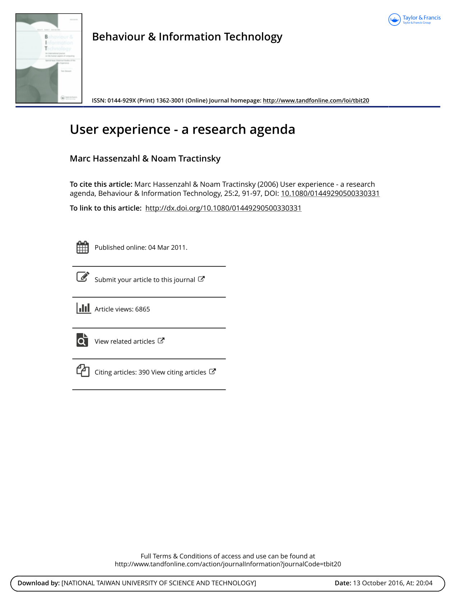
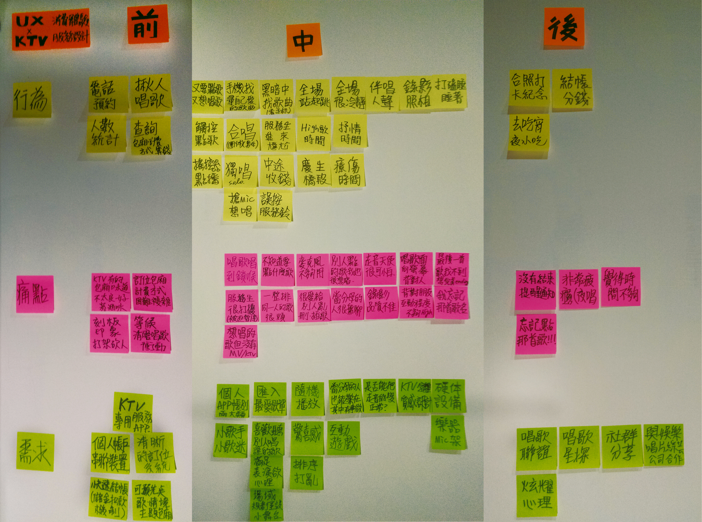
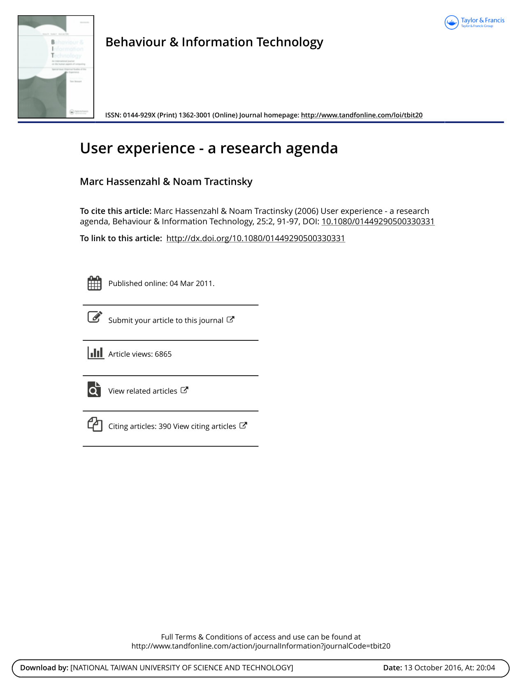
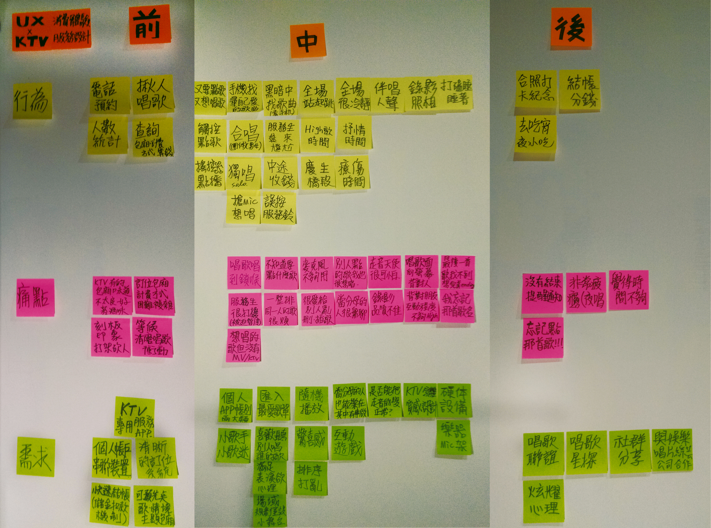

Created Oct 13, 2016 at 3:31 AM 10/27 lab meeting When Thursday, October 27, 1:30am - 4:00am UTC With Eva Yu 游硯雅 and Hsien-Hui Tang 唐玄輝 Notes *研究生同學回覆提案的stage Comments & Events Hsien-Hui Tang 唐玄輝, 總監 明天早上的schedule很緊 大家提出你的研究方向，包含題目、問題、目標與目的、預期成果，100~150字，請貼到這裡 zen 或 紫綺分享學悅成果 丹陽分享讀書心得，請把文章先給大家。 👏 Oct 26, 2016 at 1:42 AM Notified 15 people Zen 育涓 張, 產品經理 學悅實驗成果請紫綺分享歐！我做insights 補充 👏 Oct 26, 2016 at 4:34 AM Notified 15 people Danyang Wang 王丹陽, 博士生  User experience a research agenda.pdf 294 KB • Download Oct 26, 2016 at 12:37 PM Notified 16 people Sallie 王紫綺, 打掃阿姨 題目：用戶體驗服務創新的檢核流程——以購物平台與教學互動系統為例問題：目前尚無一套完整的網站標準檢核流程供企業使用，完整的檢核流程應包含線上串連至線下的服務。目標與目的：結合用戶體驗設計與服務設計思維，透過行動研究之精神，快速有系統的改善產業網站的用戶體驗。1.設計一套結合用戶體驗及服務設計的檢核流程。2.進行兩家企業的實際測試。3.修正此驗測流程，並評估此檢核流程之效益與影響。預期成果：建立一套經過驗證的完整網站流程。 👏 Oct 26, 2016 at 3:42 PM Notified 16 people Yo Tseng,曾子祐, 碩士生 研究方向：「科技整合服務」應用於「娛樂休閒產業」之「消費體驗設計」題目：以用戶體驗導向之KTV創新服務設計 / UX-KTV 問題：隨著科技的發展許多娛樂產業已整合互聯網、ＶＲ等產出許多新奇的應用，然而現有KTV娛樂產業的服務品質仍有需多待改善的空間，無論是在訂位預約、點歌介面設計、包廂的場域空間規劃、硬體設備產品設計、甚至到唱歌前中後的整體服務流程皆有許多可以優化的機會與問題點。(如圖) 目標與目的：每個人的不同的生命階段都有一些歌曲，期望能創造一個盡情放鬆歡唱的回憶體驗。目標族群：鎖定年輕族群與一般普遍愛歡暢的大眾族群，更滿足其期望需求潛在族群：如何讓不善於唱歌或當分母的人能更享受其中增加互動。市場:中國廣大市場、台灣、日韓等等 預期成果：改善並優化整體歡唱KTV的服務流程，串聯個人行動裝置APP、線上的網站平台，透過APP整合KTV前中後的服務，如訂位、點歌、服務生、紀錄留念等等；預期增加潛在族群與目標族群之間的互動、享受程度，突破科技娛樂休閒之體驗與競爭產業市場。  UXKTV-01.jpg 3.11 MB • Download 👏 Oct 26, 2016 at 3:59 PM Notified 16 people Mark 蔡炘志, 碩士生 題目: 高檔自行車臨時停車需求之研究與設計 問題: 在台灣，隨著自行車風氣的推波助瀾，高檔自行車已經日漸普遍，但失竊依然是個很大的隱憂，造成車主抱持著車不離身的防衛態度，儘管小憩一下也無法鬆懈，所以提供一個暫時停放自行車的安全處需求尚未被滿足。 目標與目的: 以使用者經驗為研究核心，形塑出一套能滿足高檔自行車臨時停車需求的合適方案。 預期成果: 媒合有臨時停車需求的車主與有閒置空間的民眾，提供一個安心且可追蹤的臨時停車場域，進而滿足上述的需求。 Oct 27, 2016 at 12:40 AM Notified 16 people James 葛承恩, 電腦助理 不好意思，家人住院需要照護，請假一次 Oct 27, 2016 at 1:24 AM Notified 16 people Eva Yu 游硯雅, 碩士生 題目： 共居資訊平台之使用者設計與研究 問題： 隨著高齡化社會來臨與家庭結構的轉變，單身、獨居人口的比例越來越高，大量的銀髮獨居者在居住上面臨高房價、難以租到房子和房子設施不足以應付老年生活等居住問題。 目標與目的： 透過使用者經驗研究與設計，提供獨居、有居住需求的用戶一完整的共居服務平台， 。 Oct 27, 2016 at 1:59 AM Notified 16 people Peiying Lin 林佩穎, 碩士生 /唐唐筆記/ 目的Purpose v.s. 目標Objective 目標是達成目的過程中必須達成的階段任務。ex:目的：設計一符合老人用戶體驗之手機操作介面目標： 了解目前老人使用手機的狀況 提出可解決老人目前使用手機的問題的設計概念 驗證及修正設計概念 👏 👏 Oct 27, 2016 at 2:15 AM Notified 16 people
Hsien-Hui Tang 唐玄輝, 總監 明天早上的schedule很緊 大家提出你的研究方向，包含題目、問題、目標與目的、預期成果，100~150字，請貼到這裡 zen 或 紫綺分享學悅成果 丹陽分享讀書心得，請把文章先給大家。 👏 Oct 26, 2016 at 1:42 AM Notified 15 people
Danyang Wang 王丹陽, 博士生  User experience a research agenda.pdf 294 KB • Download Oct 26, 2016 at 12:37 PM Notified 16 people
Sallie 王紫綺, 打掃阿姨 題目：用戶體驗服務創新的檢核流程——以購物平台與教學互動系統為例問題：目前尚無一套完整的網站標準檢核流程供企業使用，完整的檢核流程應包含線上串連至線下的服務。目標與目的：結合用戶體驗設計與服務設計思維，透過行動研究之精神，快速有系統的改善產業網站的用戶體驗。1.設計一套結合用戶體驗及服務設計的檢核流程。2.進行兩家企業的實際測試。3.修正此驗測流程，並評估此檢核流程之效益與影響。預期成果：建立一套經過驗證的完整網站流程。 👏 Oct 26, 2016 at 3:42 PM Notified 16 people
Yo Tseng,曾子祐, 碩士生 研究方向：「科技整合服務」應用於「娛樂休閒產業」之「消費體驗設計」題目：以用戶體驗導向之KTV創新服務設計 / UX-KTV 問題：隨著科技的發展許多娛樂產業已整合互聯網、ＶＲ等產出許多新奇的應用，然而現有KTV娛樂產業的服務品質仍有需多待改善的空間，無論是在訂位預約、點歌介面設計、包廂的場域空間規劃、硬體設備產品設計、甚至到唱歌前中後的整體服務流程皆有許多可以優化的機會與問題點。(如圖) 目標與目的：每個人的不同的生命階段都有一些歌曲，期望能創造一個盡情放鬆歡唱的回憶體驗。目標族群：鎖定年輕族群與一般普遍愛歡暢的大眾族群，更滿足其期望需求潛在族群：如何讓不善於唱歌或當分母的人能更享受其中增加互動。市場:中國廣大市場、台灣、日韓等等 預期成果：改善並優化整體歡唱KTV的服務流程，串聯個人行動裝置APP、線上的網站平台，透過APP整合KTV前中後的服務，如訂位、點歌、服務生、紀錄留念等等；預期增加潛在族群與目標族群之間的互動、享受程度，突破科技娛樂休閒之體驗與競爭產業市場。  UXKTV-01.jpg 3.11 MB • Download 👏 Oct 26, 2016 at 3:59 PM Notified 16 people
Mark 蔡炘志, 碩士生 題目: 高檔自行車臨時停車需求之研究與設計 問題: 在台灣，隨著自行車風氣的推波助瀾，高檔自行車已經日漸普遍，但失竊依然是個很大的隱憂，造成車主抱持著車不離身的防衛態度，儘管小憩一下也無法鬆懈，所以提供一個暫時停放自行車的安全處需求尚未被滿足。 目標與目的: 以使用者經驗為研究核心，形塑出一套能滿足高檔自行車臨時停車需求的合適方案。 預期成果: 媒合有臨時停車需求的車主與有閒置空間的民眾，提供一個安心且可追蹤的臨時停車場域，進而滿足上述的需求。 Oct 27, 2016 at 12:40 AM Notified 16 people
Eva Yu 游硯雅, 碩士生 題目： 共居資訊平台之使用者設計與研究 問題： 隨著高齡化社會來臨與家庭結構的轉變，單身、獨居人口的比例越來越高，大量的銀髮獨居者在居住上面臨高房價、難以租到房子和房子設施不足以應付老年生活等居住問題。 目標與目的： 透過使用者經驗研究與設計，提供獨居、有居住需求的用戶一完整的共居服務平台， 。 Oct 27, 2016 at 1:59 AM Notified 16 people
Peiying Lin 林佩穎, 碩士生 /唐唐筆記/ 目的Purpose v.s. 目標Objective 目標是達成目的過程中必須達成的階段任務。ex:目的：設計一符合老人用戶體驗之手機操作介面目標： 了解目前老人使用手機的狀況 提出可解決老人目前使用手機的問題的設計概念 驗證及修正設計概念 👏 👏 Oct 27, 2016 at 2:15 AM Notified 16 people
用戶體驗服務創新的檢核流程——以購物平台與教學互動系統為例
問題：
目前尚無一套完整的網站標準檢核流程供企業使用，完整的檢核流程應包含線上串連至線下的服務。
目標與目的：
結合用戶體驗設計與服務設計思維，透過行動研究之精神，快速有系統的改善產業網站的用戶體驗。
1.設計一套結合用戶體驗及服務設計的檢核流程。
2.進行兩家企業的實際測試。
3.修正此驗測流程，並評估此檢核流程之效益與影響。
預期成果：
建立一套經過驗證的完整網站流程。
題目：以用戶體驗導向之KTV創新服務設計 / UX-KTV
隨著科技的發展許多娛樂產業已整合互聯網、ＶＲ等產出許多新奇的應用，然而現有KTV娛樂產業的服務品質仍有需多待改善的空間，無論是在訂位預約、點歌介面設計、包廂的場域空間規劃、硬體設備產品設計、甚至到唱歌前中後的整體服務流程皆有許多可以優化的機會與問題點。(如圖)
每個人的不同的生命階段都有一些歌曲，期望能創造一個盡情放鬆歡唱的回憶體驗。
目標族群：鎖定年輕族群與一般普遍愛歡暢的大眾族群，更滿足其期望需求
潛在族群：如何讓不善於唱歌或當分母的人能更享受其中增加互動。
市場:中國廣大市場、台灣、日韓等等
改善並優化整體歡唱KTV的服務流程，串聯個人行動裝置APP、線上的網站平台，透過APP整合KTV前中後的服務，如訂位、點歌、服務生、紀錄留念等等；預期增加潛在族群與目標族群之間的互動、享受程度，突破科技娛樂休閒之體驗與競爭產業市場。
目的Purpose v.s. 目標Objective
ex:
目的：設計一符合老人用戶體驗之手機操作介面
目標：